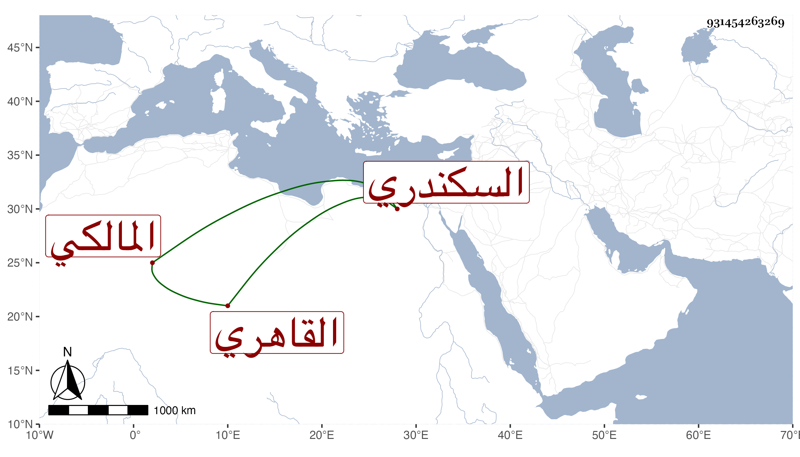

0902Sakhawi.DawLamic.ITO20230111-ara1.EIS1600.931454263269
Biography ID: 931454263269
33
أحمد بن علي بن أحمد الشهاب السكندري ثم القاهري المالكي أخو الشاهد بالكعكيين ويعرف بابن القصاص ممن سمع في البخاري بالظاهرية ومن ذلك المجلس الأخير بل قرأ في شعبان سنة خمس وأربعين على الزركشي بعض صحيح مسلم وسمع على شيخنا واشتغل وفهم . مات في ذي القعدة سنة اثنتين وثمانين ولم يكن محمودا عفا الله عنه .
